SAFARI
Users
Cold Smoked Fish / Hot Smoked Fish
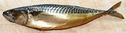
Cold Smoked Fish is a raw fish product that (except for Salmon) needs
to be cooked before consumption. Hot Smoked fish is ready to eat or use
as a snack or in recipes such as salads. Both are made by preparing with
a salt cure, then smoking at a controlled temperature. For details and
examples see our Smoked Fish
page.
Smoke Dried Fish
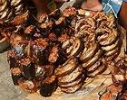
In West Africa and other regions without widely available refrigeration,
fish is smoked until very dry and crumbly. It needs a long soak before use.
This product is very different from our Western smoked fish and has it's own
Smoke Dried Fish page.
Salt Cod
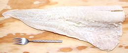 [Bacalao (Basque, Spanish); Baccala (Italian); Bacalhau (Portuguese)]
Salt Cod was once an important staple in Europe, particularly Spain, Portugal, and Italy. The fishery, off the coast of Newfoundland, was discovered by Basque whalers, and they invented the salting technique still used today (the Norwegian Vikings freeze dried their cod).
While fish can be transported and stored frozen today, the
unique flavor of salt cod is still much favored in the cuisines of
Spain, Portugal and Italy, as well as Canada and Brazil. The photo
specimen was 19-1/2 inches long, 7 inches wide and 1-1/2 inches
thick at it's thickest point, and weighed 2.3 pounds. It was
purchased from an Italian market in Los Angeles, for 2013 US $ 11.99
per pound.
Details and Cooking.
Vobla
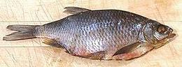 This fish is most often Caspian Roach, but other fish of the Carp family are also used. Vobla are a very popular snack item in Russia, Ukraine and Armenia, so are very common in ethnic markets here in Southern California. These fish are very dry, heavily salted, flat, thin, completely covered with large, hard, unremovable scales, full of bones and stiff as a board - so how can you eat this thing? Well, we have instructions on our Vobla page.
Asian Moist Salted Fish
This form of salted fish is used through Southeast and East Asia. It is salted without drying, so is moist and must be kept refrigerated or frozen. The traditional form shown in the photo is now rare. Today it is most commonly found in the frozen fish case, neatly packaged in flat plastic bags with heads, fins and bones removed. Mackerel is the most common and easily recognized from its blue color and broad stripes.
The photo specimens were purchased from a bulk bin at a local Korean
market. They were 11 inches long and weighed a shade over 1/2 pound each.
Details and Cooking
Asian Dry Salted Fish
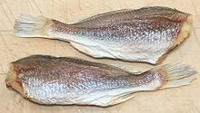 This form of salted fish is particularly popular in China, and can be very expensive, depending on type of fish and especially size. It is fully dried so it need not be refrigerated or frozen. Details and Cooking
Bonito Flake / Shaved Bonito
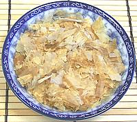 [Katsuobushi (Japan)]
Bonito Flakes are extremely important in Japanese cuisine and are also
used in Korea. They are used both to make soup stock and sprinkled on dishes
as a condiment. Bonito fillets are smoked, fermented
and dried to the hardness of a board, then shaved extremely thin. This is
quite similar to the process of making
Maldive Fish except for the final shaving. Similar flakes
(sababushi) are made from mackerel.
Mackerel Flakes / Shaved Mackerel
- [Sababushi (Japan)]This is similar to Bonito Flakes but made from mackerel instead. Since bonito are members of the Mackerel/Tuna family the difference is not great.
Maldive Fish
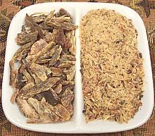 [Hiki-kandu mas]
Producing this dried fish product, made from fresh bonito, is the major industry of the Maldive Islands southwest of Sri Lanka (Ceylon). It is as essential to the cuisine of Sri Lanka as fish sauce is in Thailand. Bonito fillets are boiled, smoked and sun dried until hard as a board. They will then keep indefinitely stored in a dry place.
Traditionally this fish was sold by the piece. For use it was pounded in a large mortar until broken into tiny slivers. Today it is more often sold chipped or pre-pounded in plastic bags. The photo shows chips as I purchased them on the left and after pounding in my large stone mortar on the right.
Subst: Japanese bonito flakes are made by a similar process but
shaved rather than splintered. They are much less dense so use a larger
measure -or- Philippine Tinapang Durog, a very similar pounded product
made out of round scad can be substituted in the measure the recipe calls
for.
Tinapang Durog
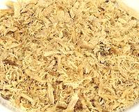 This dried, smoked, fermented and pounded fish product is similar to Maldive Fish but made in the Philippines from round scad instead of Bonito. The samples I purchased were not completely dried and were sold from a refrigerated case in small plastic bags. While it could be dried more completely for room temperature storage it's not a big deal to keep it in the freezer compartment.
Subst: Japanese bonito flakes are made by a similar process but
shaved rather than splintered. They are much less dense so use a larger
measure -or- Maldive Fish can be substituted in the
same measure called for in the recipe.
Dried Anchovies
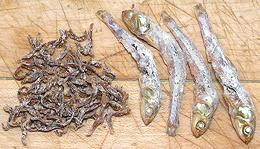 This form of dried fish is used very widely in East and Southeast Asia. They come in many sizes, the photo showing some of the smallest (0.68 inch long) and largest (2.5 inches long) common sizes. These were purchased at a Korean market in Los Angeles. The small ones are often crushed to paste with some water to make an impromptu fish sauce for use in soups, stir fries and the like. The larger are used to make Korean Anchovy Stock, a very important basic ingredient. Details and Cooking
Kapenta
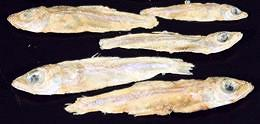 [Kapenta, Matembia (Zambia, Malawi and Zimbabwe) Limnothrissa miodon (Lake Tanganyika Sardine) Stolothrissa tanganicae (Lake Tanganyika Sprat)]
These two closely related fish are native to Lake Tanganyika and Lake Malawi.
The Sardine can grow to 6 inches (15 cm), but is usually around 3-1/2 inches
(9 cm). The Sprat is smaller, growing to 4 inches (10 cm), but commonly 2-3/4
inches (7 cm). They are both freshwater sardines, and are of considerable
nutritional value to people in the region. For details see our
Kapenta page.
Dagaa / Silver cyprinid
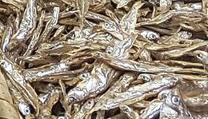 [Lake Victoria Sardine, Omena (Kenya); Dagaa (Kenya, Uganda, Tanzania); Mukene (Uganda); Rastrineobola argentea]
This fish is native to the Lake Victoria drainage, including the Victoria
Nile, Lake Kyoga, and Lake Nabugabo. It is the only fish native to Lake
Victoria that survives in great numbers after introduction of Nile Perch and
Nile Tilapia. This fish can grow to just over 3 inches (8 cm) long. It looks very
much like the Kapenta, but is a Carp while they are Herrings. It is a major
commercial fishery and important to human nutrition, in the region. IUCN
Red List LC (Least Concern). For details see our
Dagaa page.
Photo by George Jaimi (heavily cropped) distributed under
license Creative Commons
Attribution-ShareAlike v4.0 International.
Stockfish
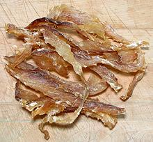 [Stoccafisso (Italy); Baccalà (Venice); Bakalar (Croatia); Okporoko (Nigeria)]
Stockfish is fish dried without salt, by cold air and wind while hanging
on racks. Some fermentation from cold tolerant bacteria also takes place.
This can only be done in regions with the right climate. The most common
fish used is Cod, but Haddock, Pollock and Cusk are also used. Stockfish
is much used in Iceland, Portugal, Italy and Nigeria. Without salt to
hold water, stockfish is very hard and dry. It takes at least 24 hours
of soaking (water changed periodically) to soften it for recipes.
Details and Cooking
Diang, Tuyo
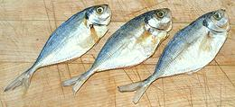 [Philippine Salt Dried Fish]
Tiny salted and dried fish are a very popular ingredient in
Philippine cooking. Many different fish are treated this way. They
are used both as an ingredient and as a flavoring, particularly with
rice, mung beans or other dishes that need a little flavor boost. The
photo specimens, Yellowtail Scad, were purchased from a Philippine
market in Los Angeles. The fish were about 5 inches long and weighed
0.33 ounce each.
Details and Cooking
Kusaya
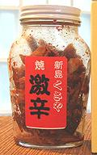 Developed on the Izu islands, this Japanese fermented and dried fish is famous for it's amazing stench, but it takes a distant second place to the Surströmming of Sweden. The stench, in both cases, is caused by fermenting with too little salt to properly preserve the fish - probably due the the very high cost of salt in ancient times.
Scad, Flying Fish and similar small fish are washed many times in
clear water, then stay 8 to 20 hours in a stinky brine that may have been
maintained for generations. The fish is then dried in the sun for about
2 days and put up in jars. The flavor is mild, and kusaya is often eaten
while drinking sake or shochu.
Photo by DDD contributed to the public domain.